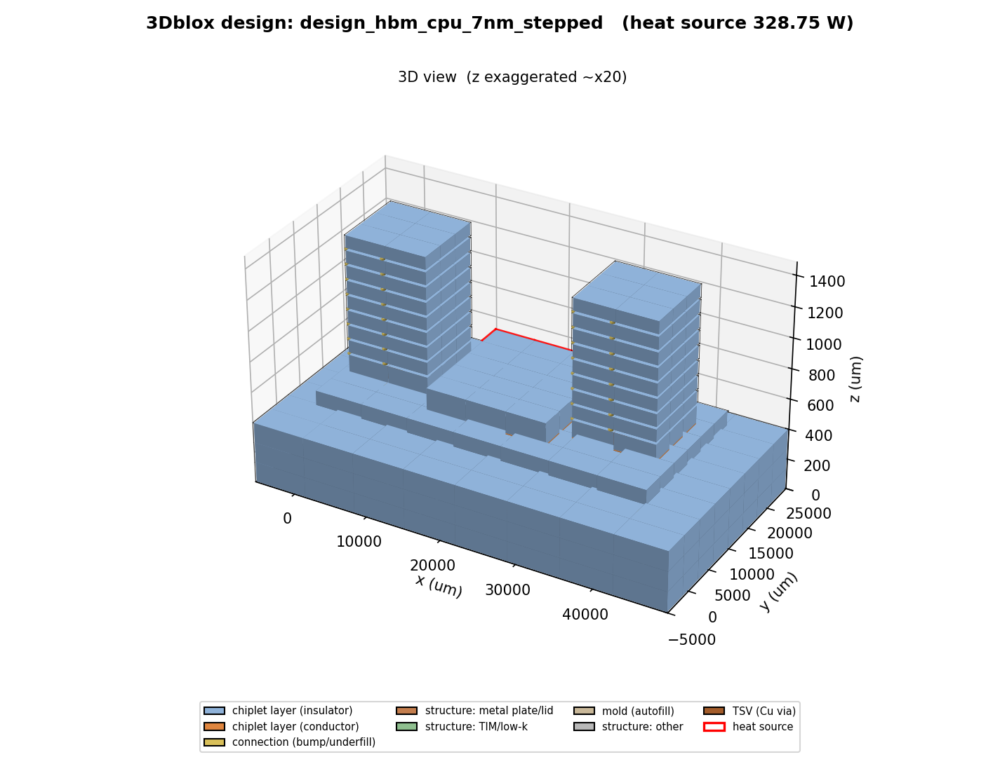
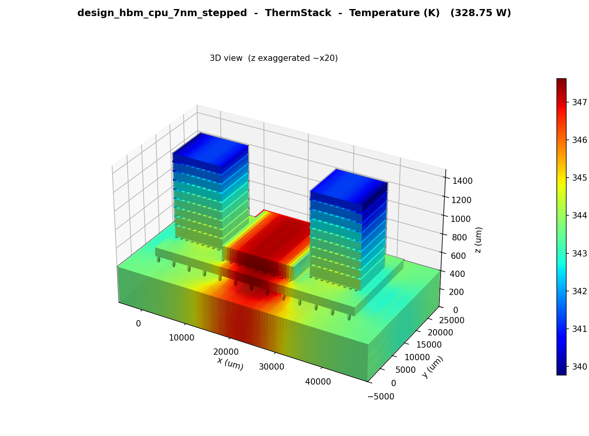
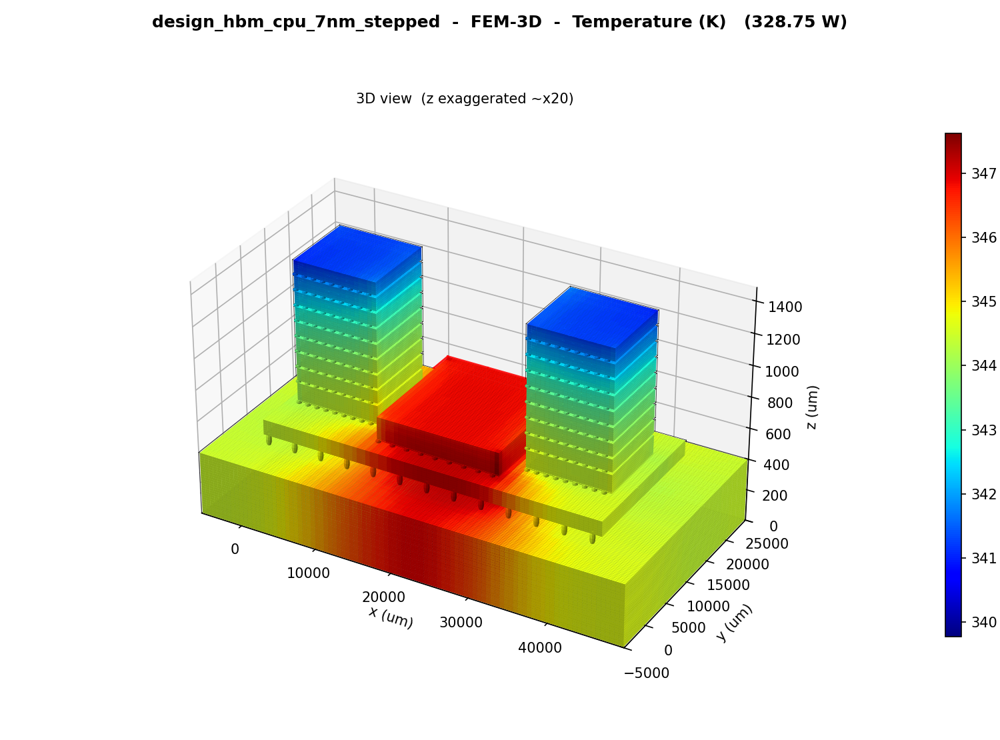
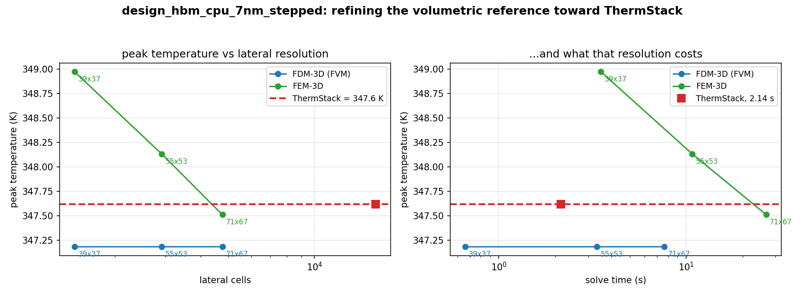
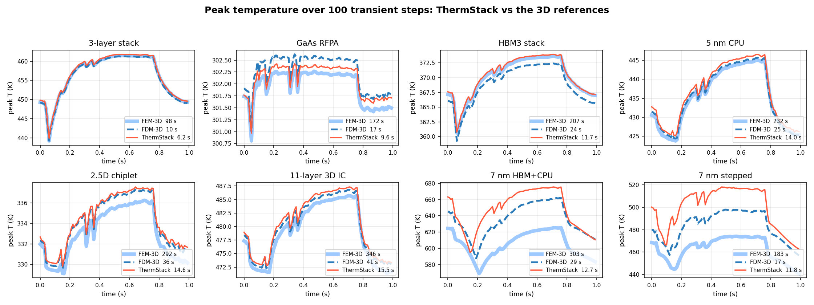
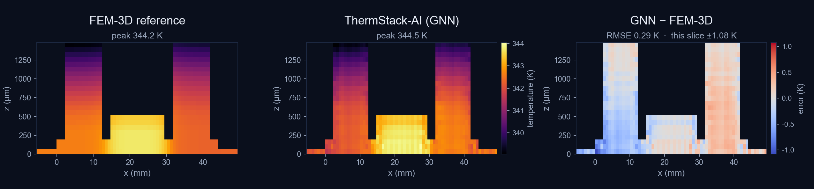

ThermStack: Geometry-Resolved Static and Transient Thermal Analysis for 2.5D/3D Chiplet Stacks
A hybrid numerical + AI thermal engine: a resolution-decoupled numerical solver for sign-off, a bundled 3D finite-element reference for ground truth, and a graph-neural surrogate for design-space sweeps.
Heterogeneous 2.5D and 3D integration has made peak junction temperature a first-order design constraint, yet the volumetric 3D solvers accurate enough to trust are far too slow to evaluate the thousands of candidates a floorplan, stack-up or power-budget search requires. ThermStack is a hybrid thermal engine for chiplet stacks described in IEEE 3Dblox. It pairs a geometry-resolved numerical solver, whose cost is decoupled from lateral resolution, with a bundled consistent-mass 3D finite-element (FEM-3D) reference and ThermStack-AI, a graph-neural surrogate for parametric sweeps. On eight native 3Dblox packages — from a 3-layer stack to an 11-layer 3D IC and two 7 nm HBM+CPU assemblies — the numerical solver tracks FEM-3D to 0.509 K mean RMSE at 68× average and up to 182× peak speedup. Over 100 transient steps driven by a measured Intel Core i5 power trace it holds 1.38 K mean RMSE at 19× mean speedup. ThermStack-AI reproduces FEM-3D temperature fields to 0.32 K mean RMSE across 360 unseen power-and-cooling cases, in 10.6 ms per 3D map.
The thermal problem in 2.5D/3D integration
Vertical stacking of dies, interposers and memory turns thermal behaviour into a first-order design constraint. Heterogeneous stacks raise thermal resistance and trap heat between layers; logic chiplets placed beside stacked HBM form localized hotspots; and with accelerators now drawing 700–1200 W, peak junction temperature decides whether a design ships.
The tools accurate enough to trust do not fit inside a design loop. A full 3D finite-element or finite-volume solve discretizes the whole volume into millions of unknowns, and its cost grows with every refinement of the lateral grid. That is acceptable for a single sign-off run. It is not acceptable for floorplanning, power-delivery planning, packaging co-design or runtime thermal management, each of which needs temperature feedback on every iteration. Without a fast and accurate model, thermal analysis gets checked last — when a fix is most expensive.
This paper describes ThermStack and reports its accuracy and runtime against full 3D references on eight real packages. Its contributions are:
- A geometry-resolved numerical solver that returns the full 3D temperature field of a 2.5D/3D stack at a cost decoupled from lateral resolution, with no meshing step and no convergence tuning.
- A bundled ground-truth reference — a consistent-mass FEM-3D solver operating on the identical geometry — so every fast answer can be checked inside the same tool.
- ThermStack-AI, a graph-neural surrogate that amortizes a package's whole power-and-cooling design space into one model and answers any point in it in milliseconds.
A hybrid engine: three solvers, one model
ThermStack ships three solvers that read the same inputs and return the same output format, so a user or an agent can move between sign-off accuracy, ground-truth checks and design-space speed without re-describing the design.
| Solver | Family | Role | Per case |
|---|---|---|---|
| ThermStack | Numerical, geometry-resolved | Production solver — sign-off | 1.9 s avg |
| FEM-3D | Numerical, consistent-mass 3D FEM | Bundled ground-truth reference | 14–545 s |
| ThermStack-AI | Graph neural network | Parametric sweeps on a fixed package | 10.6 ms |
Table 1. The three ThermStack solvers. Runtimes are from the benchmarks in Sections 4–6.
2.1 The numerical solver
The numerical engine proceeds in four steps:
- Compact problem formulation. The thermal problem is recast in a compact form whose size is set by the solution rather than by the number of cells the geometry needs. This step makes everything downstream cheap; its details are Noveety AI's core IP and are not disclosed here.
- Geometry-resolved stack model. The stack is taken as the design describes it — every die, bond line, TSV field, interposer, mold and lid, including non-coplanar stepped tops — with per-layer anisotropic materials, interface resistances, and in-plane material variation kept intact rather than averaged into one value per layer.
- One direct solve. The whole stack is resolved in one pass, with no iteration and no convergence tuning, on arithmetic that maps onto multi-core CPUs and GPUs. The same design always costs the same time.
- The full 3D field out. The result is the complete 3D temperature field on the design's own geometry — directly for steady state, or advanced step by step for transient analysis.
The practical consequence is that cost is decoupled from lateral resolution. A volumetric solver pays for every cell: doubling the lateral resolution multiplies its work several-fold, and the packages that most need resolving — fine 7 nm floorplans, concentrated hotspots, stepped stacks — are exactly the ones that make it unaffordable. ThermStack resolves the footprint at 128×128 while the solve itself stays the same size.
2.2 The FEM-3D reference
A consistent-mass 3D finite-element solver ships alongside ThermStack as ground truth. It runs on the identical IEEE 3Dblox geometry at several lateral resolutions, so any ThermStack or ThermStack-AI result can be checked in place. The benchmarks in this paper additionally cross-check against an independent 3D finite-volume (FVM-3D) solver.
2.3 ThermStack-AI
ThermStack-AI is a graph-neural surrogate: a graph encoder over the package's dies feeding a multiscale decoder. It is trained once for a given package and then spans that package's whole (power allocation, cooling) design space, returning the full 3D field with no mesh and no solve at query time. It is built for the case where one geometry is evaluated thousands of times — sweeps and optimization loops — and is validated against the FEM-3D reference on the identical geometry.
Inputs, outputs and agentic integration
Inputs. Power maps from the user's EDA flow; the chiplet structure as an IEEE 3Dblox stack description [1]; and per-layer material properties. Supported physics includes anisotropic thermal conductivity, in-plane material variation within a layer, interface thermal resistance, heat capacity for transient analysis, and convective surface cooling. Stacks with non-coplanar (stepped) tops are handled directly.
Outputs. The resolved 3D temperature field through the stack; per-layer 2D heat maps; hotspot locations; and thermal margins — all machine-readable.
Integration. Every analysis is scriptable from a first-class CLI with a structured data interface, so an autonomous design agent can invoke static or transient analysis, read back temperature maps and margins, and use them to steer the next floorplan, stack-up, power budget or cooling assumption. Because 3Dblox is the input, agents and existing 2.5D/3D-IC flows share one physical-design source of truth.
Validation methodology
Benchmark set. Eight native IEEE 3Dblox packages: a 3-layer stack, a 2.5D chiplet assembly, an HBM3 stack, a 5 nm CPU, a GaAs RF power amplifier, an 11-layer 3D IC, a 7 nm HBM+CPU package, and a 7 nm HBM+CPU package with a non-coplanar stepped top.
References. FEM-3D and FVM-3D were run on the identical geometry at three lateral resolutions, from 31×31–41×39 up to 63×63–73×69. The reference grids are geometry-aligned, so their exact size varies by package. ThermStack was run at 128×128. Static accuracy is reported as volume RMSE against FEM-3D at its finest grid.
Transient. All three solvers were driven by the same measured Intel Core i5 power trace (FLAC workload), rasterized onto each package's own geometry, for 100 time steps, each starting from the matching steady state and each at its default lateral grid.
AI surrogate. ThermStack-AI was scored against FEM-3D on the 7 nm stepped HBM+CPU package over 360 power-and-cooling combinations not seen in training.
Static results
| Method | Lateral grid | RMSE vs FEM-3D | Runtime |
|---|---|---|---|
| FEM-3D (reference) | 63×63–73×69 | — | 153.1 s |
| FEM-3D | 31×31–41×39 | 0.305 K | 10.3 s |
| FVM-3D | 63×63–73×69 | 0.492 K | 71.9 s |
| FVM-3D | 31×31–41×39 | 0.778 K | 2.85 s |
| ThermStack | 128×128 | 0.509 K | 1.93 s |
Table 2. Static accuracy and runtime, averaged over the eight packages.
ThermStack tracks the FEM-3D reference to 0.509 K mean RMSE while resolving the footprint at 128×128, and runs 31× faster than FVM-3D and 68× faster than FEM-3D at their finest grids. On the six conventional packages it lands within 0.004 K of FEM-3D — where the finite-volume solver on the same geometry sits 0.57 K away. The two dense 7 nm HBM+CPU packages are the hard cases (3.16 K RMSE for the 7 nm HBM+CPU and 0.90 K for the 7 nm stepped package), and there the references themselves are still moving with grid refinement. Peak temperature is matched to 0.57 K across all eight packages.
| Package | Speedup vs FEM-3D |
|---|---|
| 11-layer 3D IC | 182× |
| 2.5D chiplet | 93× |
| 5 nm CPU | 81× |
| HBM3 stack | 73× |
| GaAs RF PA | 46× |
| 7 nm HBM+CPU | 38× |
| 3-layer stack | 17× |
| 7 nm HBM+CPU, stepped | 12× |
| Average | 68× |
Table 3. Per-package static speedup, both solvers on the same 3Dblox geometry, FEM-3D at its finest grid (63×63–73×69). FEM-3D takes 14–545 s per package; ThermStack returns all eight in 0.81–3.00 s. Against FVM-3D at the same grid the range is 3.6×–83× (31× average).



5.1 Resolution is the price
Table 4 solves the 7 nm stepped package with both references at three lateral resolutions. Going from 39×37 to 71×67 multiplies their cost by roughly 8× while the answer moves by 1.46 K. ThermStack resolves the footprint at 128×128 — 3.4× more lateral cells than the finest reference grid — in 2.14 s, because its cost does not follow the raster resolution.
| Solver | Grid | Cells | Peak T | Solve time |
|---|---|---|---|---|
| FVM-3D | 39×37×115 | 165,945 | 347.2 K | 0.661 s |
| FVM-3D | 55×53×115 | 335,225 | 347.2 K | 3.34 s |
| FVM-3D | 71×67×115 | 547,055 | 347.2 K | 7.63 s |
| FEM-3D | 39×37×115 | 165,945 | 349.0 K | 3.51 s |
| FEM-3D | 55×53×115 | 335,225 | 348.1 K | 10.8 s |
| FEM-3D | 71×67×115 | 547,055 | 347.5 K | 26.8 s |
| ThermStack | 128×128×115 | 1,884,160 | 347.6 K | 2.14 s |
Table 4. Grid refinement on the 7 nm stepped HBM+CPU package.

Transient results
Over 100 time steps, ThermStack completes each package in 6.2–15.5 s where FEM-3D takes 98–346 s: a 19× mean and 24× peak speedup. Against FVM-3D the mean speedup is 2.0×.
| Package | Speedup | RMSE vs FEM-3D | RMSE vs FVM-3D | Peak Δ vs FEM-3D | FEM ↔ FVM peak Δ |
|---|---|---|---|---|---|
| 11-layer 3D IC | 22× | 0.233 K | 0.476 K | 1.53 K | 1.04 K |
| 2.5D chiplet | 20× | 0.162 K | 0.143 K | 1.29 K | 1.04 K |
| HBM3 stack | 18× | 0.071 K | 1.478 K | 0.31 K | 1.24 K |
| 5 nm CPU | 17× | 0.298 K | 0.785 K | 1.50 K | 0.61 K |
| GaAs RF PA | 18× | 0.019 K | 0.060 K | 0.14 K | 0.34 K |
| 3-layer stack | 16× | 0.129 K | 0.626 K | 0.31 K | 0.20 K |
| 7 nm HBM+CPU | 24× | 5.713 K | 5.976 K | 49.92 K | 36.50 K |
| 7 nm HBM+CPU, stepped | 15× | 4.386 K | 2.953 K | 43.96 K | 23.82 K |
| All eight | 19× | 1.376 K | 1.562 K | — | — |
Table 5. Transient speedup and volume RMSE over all 100 steps. The last column compares the two references against each other.
On the six conventional packages all three solvers agree to 0.30 K or better over the whole 100-step history. The two dense 7 nm packages are grid-limited for the references: under a concentrated, moving power map, FEM-3D and FVM-3D disagree with each other by up to 37 K on peak temperature at their default 31×31–41×39 grids. The residual on those two packages is therefore a question of reference resolution, not of solver accuracy.

ThermStack-AI: a graph-neural design-space surrogate
One ThermStack-AI model was trained once on the 7 nm stepped HBM+CPU package and spans its whole design space: 19 independent heat sources, each swept from 0.3× to 1.7×, and cooling from forced air to a liquid cold plate (5,000–40,000 W/m²K), giving peak temperature rises from 17 K to 228 K.
| Method | Mean RMSE | Peak error | Per 3D map |
|---|---|---|---|
| FEM-3D reference | — | — | 2.19 s |
| ThermStack-AI | 0.32 K | 0.93 K | 10.6 ms |
| ThermStack-AI, batched ×8 | 0.32 K | 0.93 K | 3.15 ms |
Table 6. ThermStack-AI against FEM-3D over 360 unseen power-and-cooling combinations.
Across the 360 unseen cases the surrogate holds 0.32 K mean RMSE — 0.45% of the mean peak rise — with 94.7% of cases within 2 K on peak temperature, at 207× the speed of FEM-3D (696× batched). No mesh is built and no system is solved at query time.

| Design points | FEM-3D | ThermStack-AI | Batched ×8 |
|---|---|---|---|
| 1 | 2.2 s | 11 ms | 3 ms |
| 100 | 3.7 min | 1.1 s | 315 ms |
| 1,000 | 36.6 min | 10.6 s | 3.1 s |
| 15,000 | 9.1 h | 2.6 min | 47 s |
Table 7. Cost of sweeping N design points, excluding the one-time training cost of about one hour per package.
A thousand-point power-budget study drops from over half an hour to ten seconds; a fifteen-thousand-point optimization loop from nine hours to under a minute.
Choosing an engine
| Task | Engine | Why |
|---|---|---|
| Sign-off on a new geometry | ThermStack | Full 3D field in seconds with no training; FEM-grade accuracy |
| Ground-truth check | FEM-3D | Bundled, same geometry and inputs |
| Workload transients | ThermStack | 19× mean speedup over FEM-3D across 100-step traces |
| Power / cooling sweeps on one package | ThermStack-AI | Milliseconds per map once trained |
Table 8. Which solver to call. With about one hour of training, ThermStack-AI overtakes repeated FEM-3D solves after roughly 1,600 design points on this package (3,600 s ÷ 2.19 s).
Scope and limitations
- Validation covers stacks of up to 11 layers, including 2.5D interposers, 3D logic stacks, HBM, CPU, RF and stepped 7 nm HBM+CPU assemblies.
- Reference grids reach 63×63–73×69. On the two dense 7 nm packages the references are still changing with refinement, so the residuals reported there bound reference resolution as much as ThermStack accuracy.
- ThermStack-AI is trained per package. It is the right tool for repeated evaluation of one geometry; for one-off sign-off on a new geometry the numerical engine remains the right tool.
- Power maps are inputs. Coupling between temperature and electrical behaviour is handled at the suite level with GridStack and MetalStack rather than inside ThermStack.
- Cooling is modelled through convective surface boundary conditions.
Conclusion
ThermStack puts 3D thermal analysis inside the design loop. Its numerical solver returns full, geometry-resolved 3D temperature fields in seconds — 0.509 K from a 3D FEM reference, 68× faster on average and up to 182× — with a cost that does not grow with lateral resolution. ThermStack-AI adds millisecond answers across a package's power-and-cooling space at 0.32 K. Because all three solvers share one model and one output format, every fast answer can be checked against ground truth in the same tool, and every analysis is a callable step for an agentic design flow.
References
- IEEE Standards Association, IEEE 3537 — Standard for 3Dblox: Chiplet Connectivity and Physical Properties Description Language. standards.ieee.org/ieee/3537
- L. Williams, “Silicon Meets Reality: Why Physics Is Now a First-Order Design Constraint for Chips,” Semiconductor Digest. semiconductor-digest.com
- VSCLAB, UC Riverside — publications underlying the methods in the NoveetyAI engines. sheldonucr.github.io/published_papers